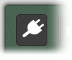
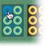
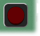
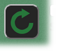
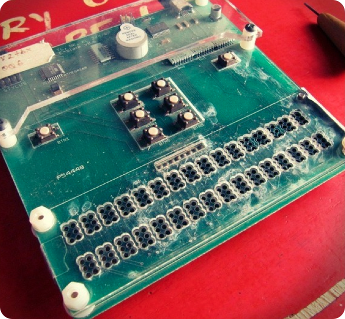
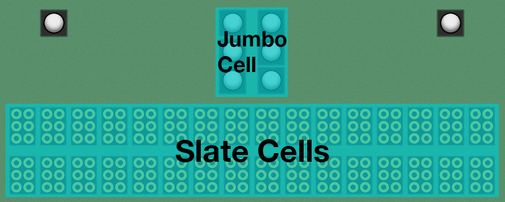
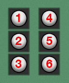
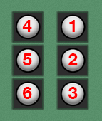
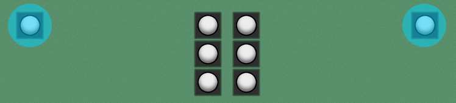

←
back
Features
Handshaking

When the real BWT is plugged in it starts sending 'n's across the wire.
It does so until it receives the string "bt", to which it responds by
sending "bt" and stopping the stream of 'n's. Turning handshaking ON
initiates this process with the emulator. This emulates unplugging
the BWT and plugging it back in.
Glyphs

When glyphs are ON, hover over a slate and
type a letter on your keyboard to press the appropriate
cells to the BWT software. Cells are pressed in number order,
e.g. typing 'd' presses cells 1, 4, then 5
as opposed to 5,1,4 or 4,5,1. A delay of 500 ms is added
between presses to avoid overloading the software.
Recording

To begin recording a sequence of inputs, press the record button
(pictured here). Recordings log input on the emulator (timing and
duration of button presses), and stores it locally so you can play
it back. Enter a name in the "Recording Name" text box if you want
to name the current recording. You can play back any recording by
selecting the recording you want to replay in the "Saved Recordings"
dropdown, and then pressing "Play".
Scripting

Scripting allows you to write .bwt scripts and save them
in the BWT_SCRIPTS directory for playback during emulation. If you
add a script to the BWT_SCRIPTS directory, you can load it into the
emulator by pressing the refresh button (pictured here). All scripts
are loaded into the emulator on startup. You can then run scripts by
selecting the script you'd like to run from the "Saved Scripts"
dropdown, and then pressing "Run".
Getting Started

The BWT Emulator virtualizes the behavior of the BWT. The BWT itself
is a very simple device. Each button on the device corresponds to
a bytecode which is sent from the BWT upon button press. For example,
pressing the upper-leftmost button on the device outputs the bytecode
"a n". The emulator simply produces these bytecodes as the
appropriate buttons are pressed.
The BWT hardware and emulator are divided into two primary sections, the
jumbo cell, and the slate cells.

BWT Sections
Jumbo Cell
The jumbo cell is the set of 6 large, centered buttons in the middle of the BWT. Each button represents 1 dot position in a braille cell. When reading braille, braille dots are numbered from top to bottom, left to right, like so:

However, when writing braille, the numbering is mirrored about the
y-axis since you push in dots to write, but read using bumps. So,
for writing, the cell is labeled like so:
Braille cell when reading

The jumbo cell is the easiest way to begin learning how to write.
The buttons are large and can be pressed without the use of a
stylus.
Braille cell when writing
Slate Cells
Once students become more advanced, they can begin using the slate rows at the bottom of the emulator. These cells can only be pressed with the use of a stylus, to simulate the stylus that would be used when writing on a physical braille slate.Navigating the Menu
The BWT software is manipulated via the BWT hardware or emulator. Upon first starting up, the BWT software will look for the BWT hardware or emulator (see handshaking for more information). To begin navigation about the menu, you must first press and hold (via shift-click) one of the two menu buttons, pictured here:

Once holding, you can begin navigation by pressing any of the buttons
on the jumbo cell. Once you've selected the menu option you'd like,
confirm the selection by pressing the menu button again (i.e. stop
holding the menu button, and then press it again).
Menu buttons
Emulator
Recorder
Recording Name
Saved Recordings
Play
Scripting
Saved Scripts
Run
Message Log